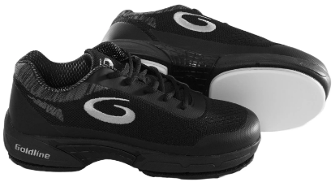

Curling je timski sport koji se igra na ledu. Dvije ekipe naizmjence guraju granitne kamenove prema cilju – krugu koji zovemo kuća. Curling je olimpijski i paraolimpijski zimski sport s disciplinama za žene, muškarce, mješovite parove i mješovite ekipe u invalidskim kolicima. Osim tih olimpijskih disciplina postoji još i neolimpijska disciplina mješoviti curling.
Curling discipline
U tradicionalnim curling disciplinama - žene, muškarci, mješoviti curling – ekipe se sastoje od četiri igrača. U ženskom i muškom curlingu ekipe mogu imati i petog igrača - rezervu. Svaka ekipa koristi komplet od osam kamenova iste boje ručke – najčešće crvene ili žute. Svaki igrač baca po dva kamena, naizmjenično s protivnikom. Pozicije igrača su: Prvi (baca prva dva kamena), Drugi (baca treći i četvrti kamen), Treći (baca peti i šesti kamen) i Četvrti (baca posljednja dva kamena). Svaka ekipa imenuje Skipa (kapetana) i Vice-skipa, a te uloge mogu imati igrači na bilo kojoj od pozicija. Uloga Skipa je voditi igru ekipe - on stoji u kući i odlučuje koji će se potezi igrati. Vice-skip preuzima Skipove dužnosti dok Skip baca vlastite kamenove.
U disciplini mješovitih parova ekipe imaju po dva igrača - jednu ženu i jednog muškarca. Svaka ekipa baca po pet kamenova. Jedan igrač baca prvi i peti kamen, a drugi igrač drugi, treći i četvrti kamen.
Ledena staza

Curling se igra na ledenoj stazi posebno pripremljenog leda. Staza je dugačka 45,7 metara i široka 5 metara. Na svakom staze kraju nalazi se krug (kuća). Svaka kuća sastoji se od četiri koncentrična kruga koji pomažu odrediti koji su kameni najbliže centru kuće.
Oprema



Za curling su potrebni kamenovi od posebne vrste granita koji teže oko 20 kilograma. Svaki igrač ima vlastitu metlu i posebne curling cipele - jedna potplata je protuklizna, a druga je klizna te služi prilikom bacanja kamena. Gumena navlaka štiti kliznu potplatu i daje stabilnost prilikom kretanja na ledu.
Metenjem se blago zagrijava površina leda ispred kamena u pokretu. Dobro metenje može produžiti putanju kamena za nekoliko metara i utjecati na zakretanje kamena.
Bodovanje i elementi igre
Utakmica se sastoji od 8 endova (rundi). Nakon svakog enda ekipa dobiva jedan poen za svaki vlastiti kamen koji se nalazi unutar ili dodiruje kuću i bliži je središtu od bilo kojeg protivničkog kamena. Samo jedna ekipa može dobiti poene u jednom endu. Ako ni jedan kamen nije unutar kuće, nema poena – to se zove prazan end.
Ekipe naizmjenično bacaju kamen sa startera prema kući na suprotnom kraju staze. Igrač mora pustiti kamen prije prednje linije. Nakon što su svi kamenovi bačeni, igrači sami izračunavaju dobivene poene. Na kraju utakmice, ekipa s najviše osvojenih poena pobjeđuje.
Bacanje kamenova
Čuvar - kamen se baca ispred kuće u zaštićenu zonu kako bi zaštitio kamenove u kući.
Polaganje - kamen se baca tako da uđe u kuću i zauzima poziciju za osvajanje poena.
Izbijanje – bacanje kamena kojim se protivnički kamen izbacuje iz igre.
Prilikom bacanja kamena – desnom rotacijom (u smjeru gibanja kazaljke na satu) ili lijevom rotacijom (suprotno od smjera gibanja kazaljke na satu) igrači utječu na zakretanje i putanju kamena.
Prednost posljednjeg kamena
Prije početka utakmice ekipe odlučuju koja će imati prednost bacanja posljednjeg kamena u prvom endu. To se određuje preciznim polaganjem - bacanjem kamena prema centru kuće: dva igrača iz svake ekipe bacaju po jedan kamen nakon čega se mjeri udaljenost kamena od centra. Ekipa s manjom ukupnom udaljenošću dobiva prednost bacanja posljednjeg kamena u prvom endu. Tijekom utakmice, ekipa koja osvoji poen(e), gubi prednost bacanja posljednjeg kamena koja prelazi na protivničku ekipu za idući end. U slučaju praznog enda, prednost ostaje na istoj ekipi.
Vremensko ograničenje
Prosječna utakmica traje do dva i pol sata. U slučaju da se mjeri vrijeme, svaka ekipa dobiva određeno vrijeme za razmišljanje koje u tradicionalnim disciplinama iznosi 30 minuta, a u disciplini mješovitih parova 22 minute. Ukoliko nekoj od ekipa istekne vrijeme, gubi utakmicu.
Korisne poveznice
- Svjetska curling federacija
- Skeki - Njemačka online trgovina curling opreme
- SoftPeelR - Online vođenje curling turnira
- Žensko finale Olimpijskih igara u Cortini 2026
- Muško finale Olimpijskih igara u Cortini 2026
- Sjajan udarac legendarnog Šveđanina Niklasa Edina
- Gdje i kako se izrađuju curling kamenovi